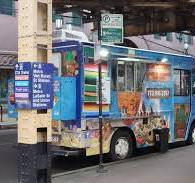
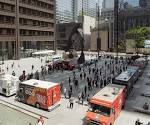

Best Neighborhood & Daily Spots:
Here is a list of some neigborhoods food trucks spots in Chicago
Daley Plaza: Friday lunchtime food truck fest (May-October)
The Loop: High concentration of trucks on N. Clark St/W. Lake St, and S. Wacker & Monroe.
Streeterville: Often features Hello Boba on N St Clair St.
Andersonville: Popular stop for Paris Ouh La La crepes.

